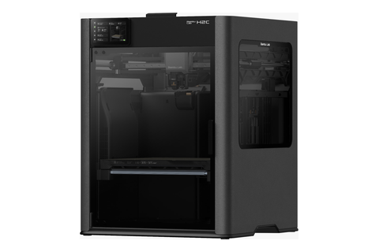
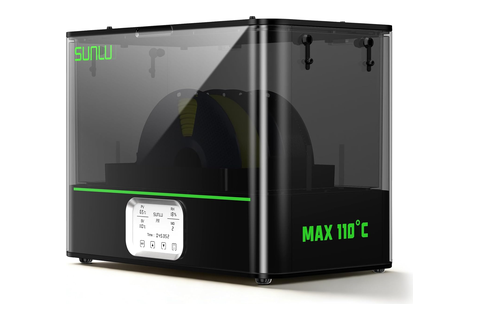
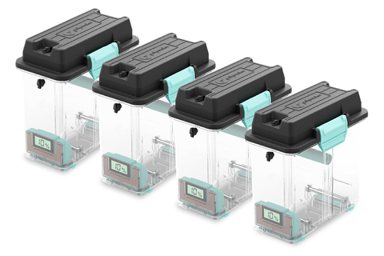

3D printers
two Bambu H2C · nearly every part inside the appliance starts here
Tool station · 13/13The appliance
Dry each filament at its own temperature, then
feed it freely. Match the part's reviewed native project for its
nozzle, plate and recipe. ASA Aero floats include a manual magnet pause.
Printers
H2C × 2 AMS Combo
Plate + nozzle
Per project reviewed slice
PETG
AMS 2 Pro ×3 dries + feeds
PET-GF · TPU · ASA
E2 · PolyDryer dry + feed
Filament
Dries and feeds from
Comes off the plate as
What it is really for
PETG, blackCC-13 · EN-06 · EN-07
AMS 2 Pro
dries in place, then feeds the print
The copper plugs, ASSE drip pan, PRV shroud, reed bridge,
fuse clamp, rings and collars
Small parts inside the enclosure and coloured tube identification.
PETG, clearCC-08 · CC-09
The same AMS 2 Pro
Bambu PETG Basic, Translucent Clear
Both reservoir bodies and both reservoir caps
bare printed walls contact syrup
The customer reads fill level straight through the wall.
TPU 90ACC-15 · FU-02
PolyDryer box
sealed box, short straight feed
Foam-cap gaskets, reservoir gaskets, dry-side bulkhead washers,
vent retaining rings, the above-counter gasket
and the o-ring
printed from per-unit-trivial stock, not costed
Seals matched to their interfaces; wet-side bulkhead washers are
purchased silicone.
PET-GF15exterior · CC-05
SUNLU E2 110 °C1 kg dries and prints in the
chamber; 3 kg feeds from a PolyDryer XL ·
100 °C × 10 h
if it has taken on moisture
Exterior pieces, nameplate, display cover, faucet and above-counter
plate; cold-core foam shell, caps and lids
heat-set inserts go in at SO
Visible surfaces, the countertop load path and the cold-core frame.
ASA Aerocarbonator + reservoirs
SUNLU E2: 80 °C × 8 hforced air; transfer to Polymaker drybox,
external right slot 255; store and feed
below 20% RH
Three trial floats, each enclosing one RC62
at the reviewed pause: keep the float on the bed,
seat the ring below the rims, keep the guide bore open, manually resume
Right hardened standard-flow 0.4 mm nozzle.
Use the float recipe; current CAD needs its own native slice
review. Liquid service remains unqualified.
⛔
Reservoirs,
ASA Aero floats and TPU reservoir seals touch liquid. Inspect bare
surfaces; pressure endurance and compatibility need physical
qualification.
Left and right H2C hotends differ. Match the
reviewed native project; check stock in ledger/tools.md.
Printed tooling: coil mandrel, reed-bridge gauge,
funnel mold shells and contoured mandrel, single-valve cradle.
None ships with the machine.
Have in hand

Bambu H2C×2, AMS ComboAMS2 Pro ×3 · HT ×2

SUNLU E2PET-GF + ASA drying

PolyDryer×4 · XL ×2 sealed
Dry, then feed. ASA Aero dries in the E2 and
feeds from the sealed Polymaker box. TPU and large PET-GF spools also
feed from dryboxes after drying. The S4 holds sealed stock.